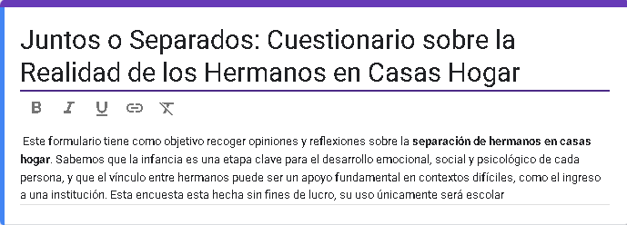
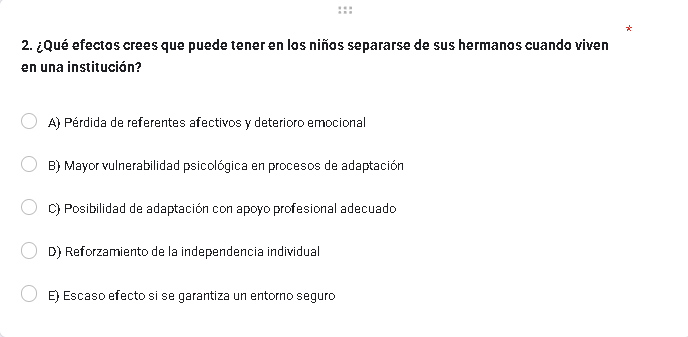
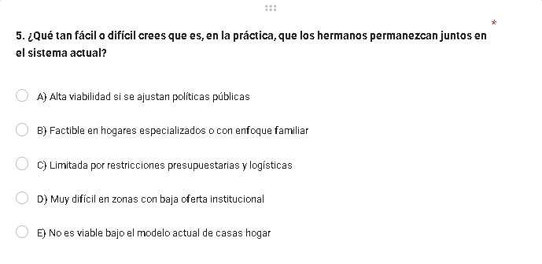
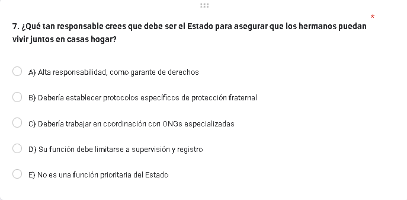
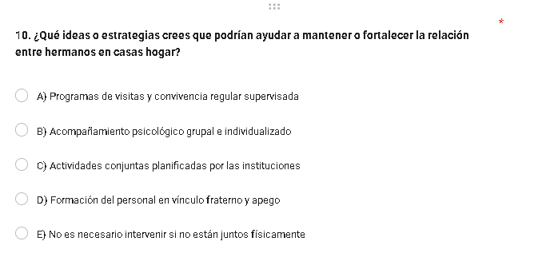

Formulario utilizado
Se utilizará un enfoque mixto (cuantitativo y cualitativo) con una estrategia de diseño no experimental y transversal, ya que se pretende recoger la percepción y el análisis de los participantes en un momento determinado, sin intervenir directamente en la dinámica de las casas hogar. El método de investigación que utilizamos para este proyecto fue la entrevista, en este caso, una entrevista por medio de un formulario online creado con Google Forms, contando con 10 preguntas cerradas y una abierta para posteriormente analizar las respuestas y sacar conclusiones y propuestas mejor argumentadas y enfocarnos en lo mas relevante de aquella investigación y sus resultados.
Es una herramienta flexible y dinámica que permite al investigador obtener información profunda sobre las experiencias, opiniones y perspectivas de los participantes sobre un tema específico.
Formulario
La herramienta empleada para la realizacion del formulario es "Google Forms" ya que es la que mejor desempeño tiene al momento de hacer formularios, ademas que nos facilita la recopilacion y agrupacion de las respuestas para poder realizar un mejor análisis.
Preguntas clave de la investigacion
Clave para comprender el impacto profundo y justificar la necesidad de evitar la separación salvo en casos excepcionales.
Esencial para saber si las propuestas pueden implementarse realmente o si requieren cambios estructurales.
Fundamental para definir el rol gubernamental en la solución: ¿debe crear políticas, destinar recursos, modificar leyes?
Directamente aplicable: las respuestas pueden traducirse en programas, protocolos o intervenciones reales.